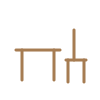
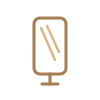
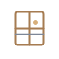
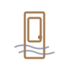
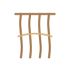
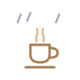
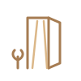

Vivianne dos Santos · uma porta
Os 7 Sinais de Desencaixe
como continuo a pertencer sem me abandonar?
Os Sinais sao a unica porta que cheira a casa. Falam do lugar para onde regressas quando deixas de te proteger.
Paleta · quentes domesticos, a luz da tarde
Assinatura · o Limiar

Nem dentro, nem fora. Portas, janelas, escadas, varandas, soleiras, corredores, entardecer, amanhecer, luz que entra e luz que sai. Nunca chegada, nunca partida, sempre travessia. E a geografia propria do desencaixe.
Os sete sinais
A Mesaestou aqui mas nao estou em casa






Tipografia · serifada e o grande 7 dourado
7
Vivianne dos Santos
Maturidade, lentidao, literatura, permanencia. Sem tipografias manuscritas, nunca.
Modelo de prompt
Universo: Os 7 Sinais de Desencaixe Sinal: <nome> Cena: interior habitado ou limiar, luz de fim de tarde a atravessar um vazio Assinatura: o Limiar, porta, janela, escada, varanda, soleira, sempre travessia Objectos possiveis: <motivo do sinal>, chavena, manta, cadeira, planta, cortina Paleta: fundo #F4EFE8, luz #E8D5B5, dourado #C7A96B, madeira #A67C52, azul residual #7D8797 Proibido: partida, ruptura, malas, comboios, aeroportos, passaros, tempestade, ilustracao literal Emocao: transicao serena, nunca nostalgia dramatica Registo: fotografia cinematografica de interiores e luz natural